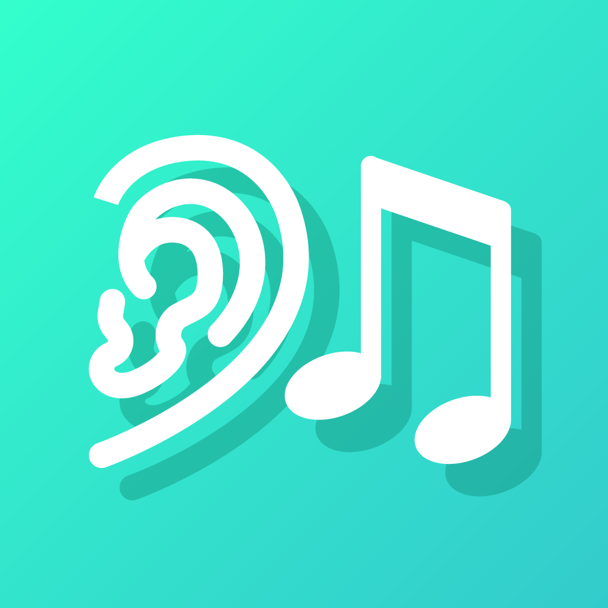
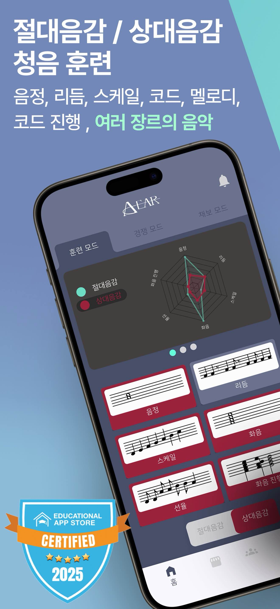

Absolute Pitch
2022 · 리드 앱
21,400+
Absolute Ear
2024 · 확장 앱
8,600+
Pitch Runner
2026 · 신작
출시 중
WHY
화성학을 비전공자로 독학하던 개인 불편에서 출발했습니다. 기존 음악 교육 앱에 "절대음감 훈련만 몰입할 수 있는 앱"이 없다는 것을 직접 느끼고 이 문제를 풀어보기로 했습니다.
HOW
정체기
2022년 첫 앱 Absolute Pitch 출시 후 월매출 1달러 수준의 정체기가 길어졌습니다. 첫 앱이라 기획 경험이 부족했고, 사용자 리뷰는 쌓이는데 무엇을 바꿔야 할지 체계가 없었습니다.
근거 수집
2025년 하반기 AE 기획 단계에서 Amplitude 퍼널 분석과 사용자 설문(외국인 468·한국인 186명, 총 654명)을 병행했습니다. 사용자 구조가 취미 65% · 입시/전공/프로/교사 25%로 나뉘고, 취미층이 "뭐부터 해야 할지 모르겠다"·"화성학 이론 지식이 부족하다"는 불만을 많이 남긴다는 것을 확인했습니다.
핵심 결정
"기능을 더 추가"가 아니라 사용자가 시작점을 스스로 찾을 수 있게 돕자로 방향을 잡았습니다. Absolute Ear를 독립 앱으로 분화해 수준 진단 온보딩 + 맞춤 커리큘럼 + 화성학 이론 세션을 신규 설계했고, AP와 UI·상호작용을 공유해 기존 사용자 전환 비용을 낮췄습니다. 이어서 "짧은 시간에 반복 훈련하고 싶다"는 요청을 반영해 Pitch Runner(2026 신작)를 5분 게임 러닝 메커닉으로 설계했습니다.
WHAT
결과
AE 출시 이후 TigerStone 시리즈 월매출이 1달러 → 770달러로 올라가고, 영국 120만 구독 음악 유튜버 David Bennett·국내 20만 구독 피아노 유튜버 Sofa4844와의 콘텐츠 협업도 이 시기에 성사되었습니다. AP·AE·PR 3개 앱으로 분화한 결과 시리즈 전체로 누적 30,000+ 다운로드와 Educational App Store 교사 평점 5.0을 4년간 유지하고 있습니다.



앱 링크 · Absolute Pitch iOS · Android · Absolute Ear iOS · Android · Pitch Runner iOS · Android

.png)


 스크린샷/홈화면.png)
 스크린샷/노드 화면.png)
 스크린샷/포트 연결.png)
 스크린샷/포트 검색.png)